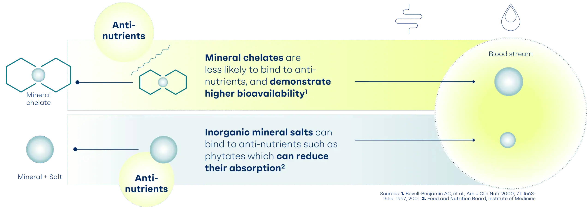
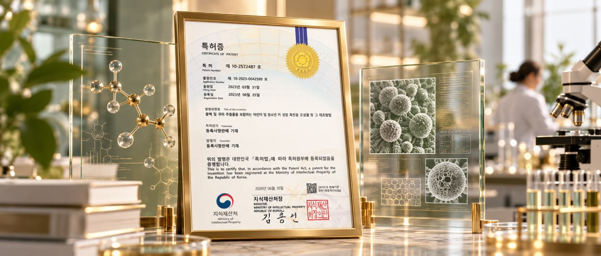
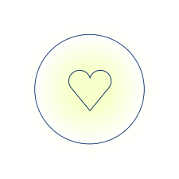

WCO31은 총백(蔥白, 파뿌리 흰 부분)과 귀리(Oat)를 최적의 비율로 배합한 원료입니다. 전통식치(食治)에서 오랫동안 사용되어 온 두 식재료를 현대 과학으로 검증했습니다.
총백은 동의보감에서 단방(單方)으로 가장 빈번하게 활용된 핵심 약재이며, 귀리는 타임지 선정 10대 슈퍼푸드로 성장에 필요한 영양소가 풍부합니다.
총백의 따뜻한 기운(발산) + 귀리의 보익(영양 보충) =
어린이 성장을 위한 식약동원(食藥同源) 조합
각 원료의 특성과 가치를 정직하게 소개합니다.
파의 뿌리 흰 부분으로, 동의보감에서 단방으로 가장 많이 활용된 약재입니다. 따뜻한 성질(溫)과 매운맛(辛)으로 발한해표 작용을 하며, 기혈 순환을 돕습니다.
타임지 선정 10대 슈퍼푸드로, 복합 탄수화물·고단백·필수 미네랄이 풍부합니다. 단백질과 뼈 성장 필수 미네랄을 풍부하게 함유한 곡물입니다.
전통식치의 지혜를 현대 과학으로 검증했습니다. 과학적 근거 자세히 보기 →
만 6~8세 어린이 150명 분석 대상, 다기관 무작위배정 이중맹검 위약대조 임상시험. WCO31(1.2g/일) 24주 섭취 결과, 키·성장률·키 SDS 모든 항목에서 통계적으로 유의한 우수성 확인 (p < 0.001).
이유기 쥐 대상 동물실험에서, 고용량 WCO31 섭취군의 대퇴골·경골 길이가 동물모델에서 대퇴골·경골 길이 증가가 관찰되었습니다. 성장판 증식대·비대대 활성 촉진 및 장내미생물 개선 효과 확인.
총백의 Fistuloside A/B/C와 귀리의 Avenacoside A 성분이 성장분화인자 GDF5 및 IGF1R 수용체와 강하게 결합(-9 kcal/mol 이하)하여 성장 관련 수용체(GDF5, IGF1R)와의 결합을 확인했습니다.
• 만 6~8세 어린이 150명 분석, 24주, 1.2g/일
• 다기관, 무작위배정, 이중맹검, 위약대조
• 대상: 건강한 만 6~8세, 키 3~50 백분위 아동 150명 분석
• 한국 소아청소년 성장도표 3~50 백분위수
• 2차 성징 미발현 아동
• 키, 성장률, 성장률 SDS, 키 SDS, 연령별 키 Z-score
• 모든 항목에서 위약군 대비 통계적으로 유의한 우수성
• 24주 키 증가: WCO31군 3.12±0.92cm vs 위약군 2.38±0.82cm (차이 0.74cm)
• 섭취와 관련된 이상반응은 보고되지 않음 — 우수한 안전성 프로파일 확인
출처: Kim et al. Nutrients 2026;18:1326
출처: Kim et al. Nutrients 2026;18:1326
출처: Kim et al. Nutrients 2026;18:1326
* 임상 연구 조건에 따라 결과가 달라질 수 있습니다.
* 1차 분석(PP) 기준, ITT 분석에서는 통계적 유의성 미도달
출처: Kim et al. Nutrients 2026;18:1326
총백 및 귀리 추출물을 포함하는 조성물의 키 성장 촉진 효능은 대한민국 특허청에 등록되어 기술적 우수성을 인정받았습니다.

식치(食治)는 음식으로 건강을 관리하는 전통 식이요법입니다. 총백은 단순 채소가 아닌 '약용 음식(Food-Medicine)'으로 분류되어, 동의보감 탕액편에 총백이 수록된 전통 식재료입니다.
전통식치 자세히 보기 →아이에게 안심하고 먹일 수 있는 원료인지, 철저히 검증했습니다. 안전성 자세히 보기 →
총백 추출물은 인간 정상 세포에 유의미한 세포 독성을 나타내지 않으며, 세포독성 시험 결과 유의한 독성은 관찰되지 않았습니다.
파(Allium 속)는 오랜 기간 인류의 식단에 포함되어 온 전통 식재료입니다. 귀리는 영양가 높은 곡물로 널리 소비되어 왔습니다.

화학 유기 용매를 배제하고 순수한 물과 열만 사용하는 열수 추출 공법으로, 잔류 용매 걱정이 없습니다. 전통 탕전 방식을 현대화한 안전한 공법입니다.
루톤의 원료 연구와 제품을 확인해보세요.
루톤 제품 보러 가기